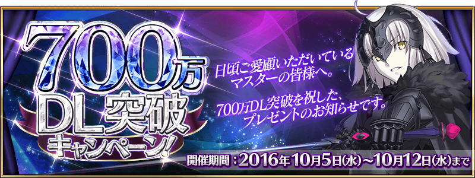
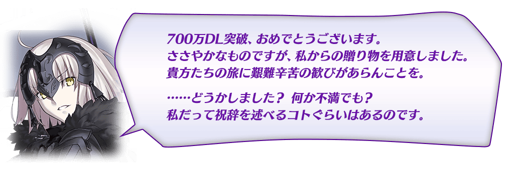
◆活動舉辦期間◆
2016年10月5日(三) 16:00～10月12日(三) 12:59
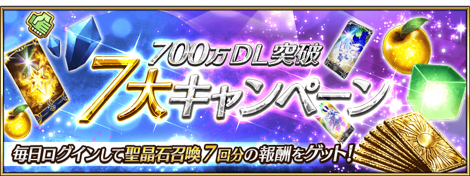
|
在下列期間中，7次登入(1天計算1次)最多贈送呼符7枚！ ◆宣傳活動舉辦期間◆ ※第1次的登入獎勵，從10月6日(四) AM3:00配發。 |
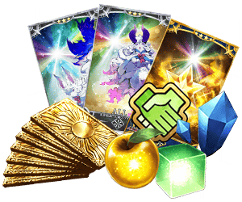 |
| 登入次數 | 贈送内容 |
|---|---|
| 第1次 | 呼符1枚、700萬QP |
| 第2次 | 呼符1枚、友情點數70,000pt |
| 第3次 | 呼符1枚、叡智の猛火 ALL★4(SR)7枚 |
| 第4次 | 呼符1枚、英靈結晶・太陽のフォウくんALL★3（ATK）7枚 |
| 第5次 | 呼符1枚、英靈結晶・星のフォウくんALL★3（HP）7枚 |
| 第6次 | 呼符1枚、黄金の果実7個 |
| 第7次 | 呼符1枚、マナプリズム70個 |
以期間限定，幕間物語、強化關卡、魔術禮裝獲得關卡的AP消費變成1/2！
|
◆宣傳活動舉辦期間◆ ◆對象關卡◆ |
1天1次免費進行的友情點數召喚，從1次召喚翻新成10次召喚！
◆翻新實施時間◆
2016年10月5日(三) 23:00～
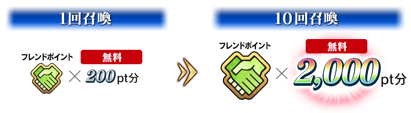
連續登入獎勵小翻新！
每日能得到的「竜の牙」變更成「凶骨」。
◆翻新實施日◆
2016年10月6日(四) AM3:00～
※就算是翻新日，連續登入獎勵也不會重置。
會繼承舊登入獎勵的經過天數計算。
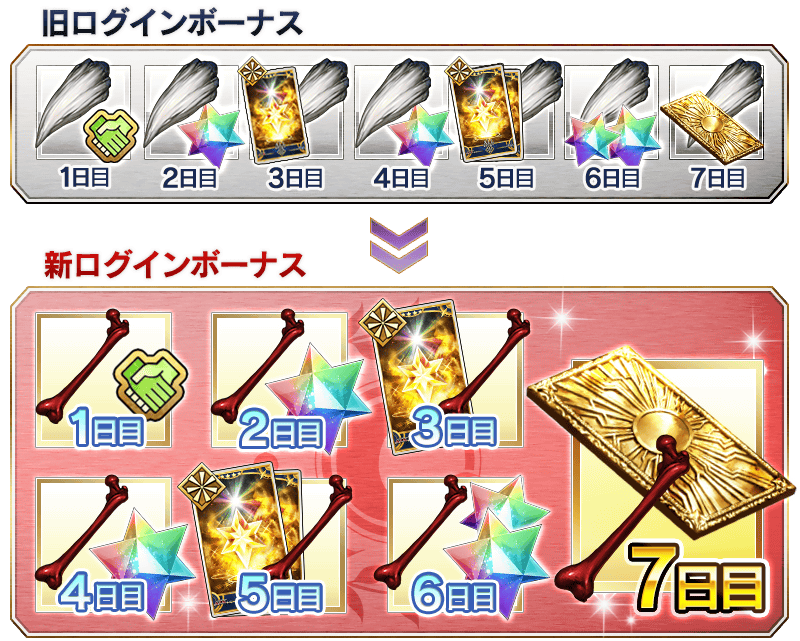
將有強化過1次以上的概念禮裝做為強化素材消費的情況能獲得的EXP量，變更成與該素材強化過的EXP量同程度。
因此，已強化的概念禮裝變得更容易做為強化素材利用。
◆翻新實施日◆
2016年10月5日(三) 16:00～
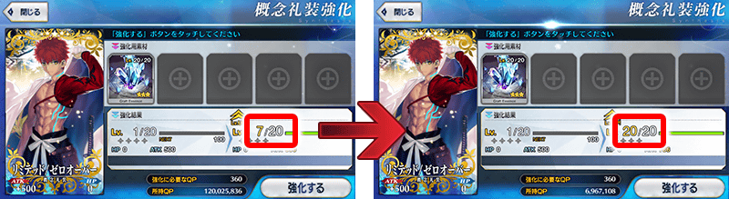

進行Servant及概念禮裝的強化時，大成功(經驗值2倍加成)・極大成功(經驗值3倍加成)發生的機率以期間限定變成2倍。
無論如何藉此機會強化喜愛的Servant和概念禮裝吧！
◆舉辦期間◆
2016年10月5日(三) 16:00～10月12日(三) 12:59
舉辦強化Servant能力的特別關卡「Servant強化關卡」！
共計7位的Servant為對象。
詳情請在此處的公告確認。
◆舉辦期間◆
2016年10月5日(三) 16:00～
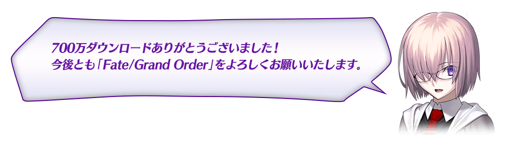
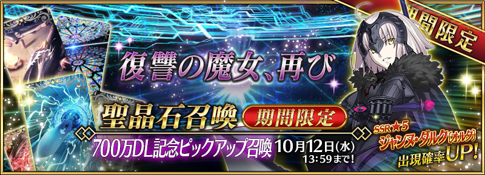
◆「700萬DL記念Pick Up召喚」期間◆
期間：2016年10月5日(三) 16:00～10月12日(三) 12:59
舉辦「700萬DL記念Pick Up召喚」！
記念700萬DL突破「★5(SSR)貞德〔Alter〕」以期間限定登場！
詳情請在聖晶石召喚畫面左下的召喚詳細確認。
※貞德〔Alter〕在Pick Up召喚期間結束後，不會追加到故事召喚。
並且，★3（R）概念禮裝的陣容一部份翻新！
「★3(R)ヒュドラ・ダガー」「★3(R)フラガラック」「★3(R)天の逆月」先行新登場！
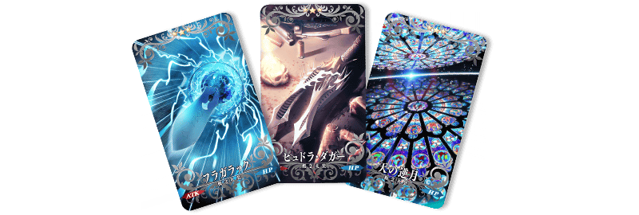
※伴隨著翻新，「★3(R)時計塔」「★3(R)波濤の獣」「★3(R)セルフ・ギアス・スクロール｣在Pick Up召喚不再是召喚對象。但仍可在故事召喚及友情點數召喚獲得。
※「★3(R)ヒュドラ・ダガー」「★3(R)フラガラック」「★3(R)天の逆月」在Pick Up召喚期間結束後的維修結束時，會追加到故事召喚。
※「★3(R)時計塔」「★3(R)波濤の獣」「★3(R)セルフ・ギアス・スクロール｣在Pick Up召喚期間結束後的維修結束時，不再是故事召喚的召喚對象。
Pick Up期間中，期間限定Servant的出現機率提升！
10次召喚中★4(SR)以上1張確定和★3(R)以上的Servant1位確定！
※★4(SR)以上確定包含Servant和概念禮裝。
※所謂「出現機率UP」意指比同稀有度的Servant及概念禮裝出現機率更高的設定。
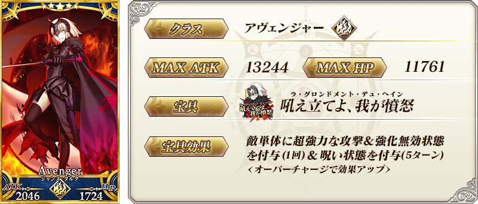
| 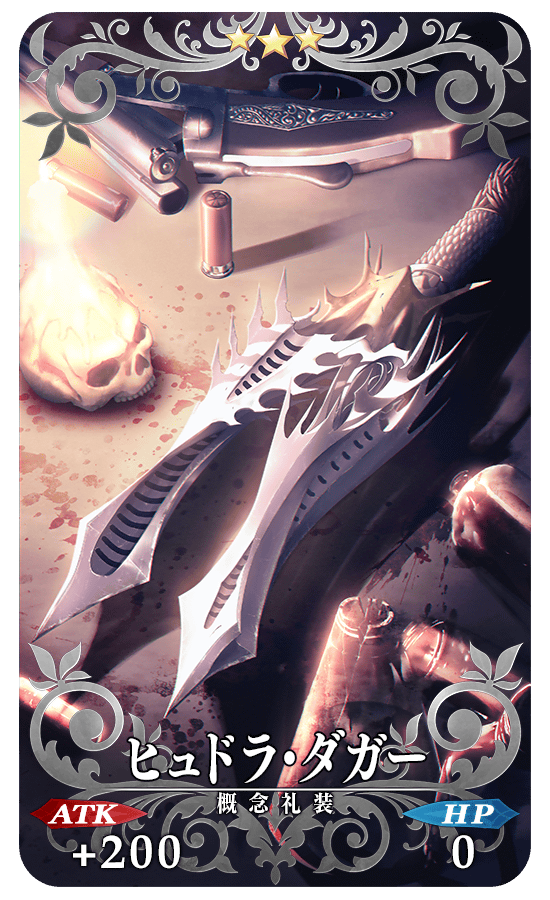 |
★★★R ヒュドラ・ダガー ATK 200（最大：1000） HP 0 技能 自身的即死賦予成功率提升5% |
| 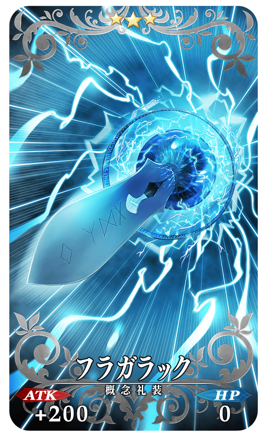 |
★★★R フラガラック ATK 200（最大：1000） HP 0 技能 自身的星星集中度提升200% |
| 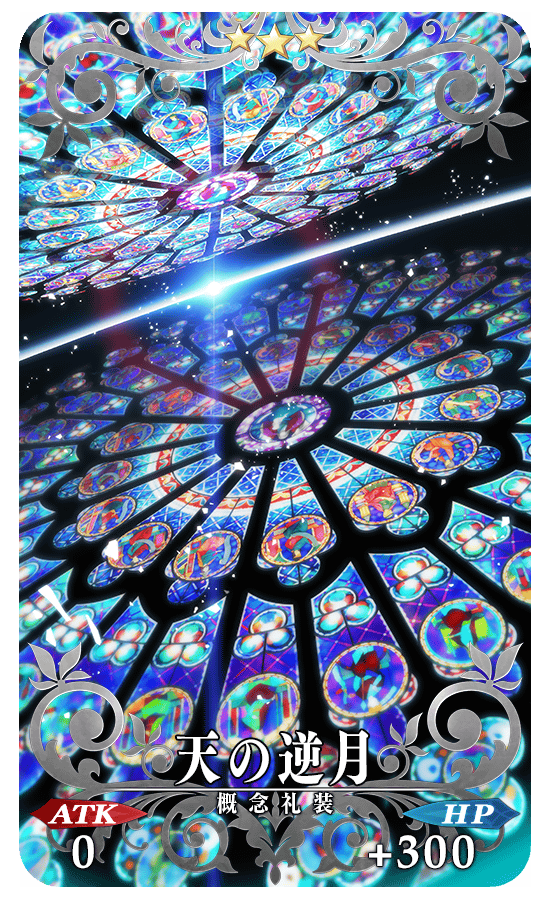 |
★★★R 天の逆月 ATK 0 HP 300（最大：1500） 技能 對自身賦予每回合星星1個獲得狀態＆弱體耐性提升5% |
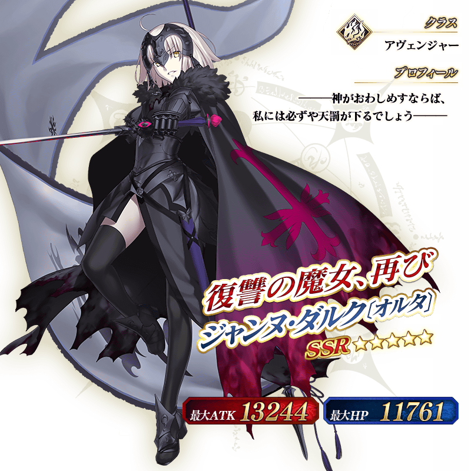